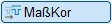
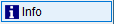
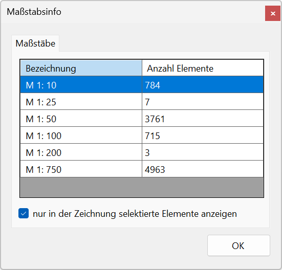

 ")
In der Zeichnung verwendete Maßstabsangaben (ausgewählte Elemente oder alle Elemente) mit den enthaltenen Elementen abfragen und in der Zeichnung anzeigen. Öffnet den Dialog Maßstabsinfo.
Maßstabsinfo (Dialogbeschreibung)

Maßstäbe
Maßstabsangaben mit Anzahl der in der Zeichnung enthaltenen oder selektierten Elemente.
In der Zeichnung werden die Elemente des in der Liste markierten Maßstabes hervorgehoben. Klicken Sie gegebenenfalls auf einen anderen Eintrag, um die enthaltenen Elemente in der Zeichnung anzuzeigen.
Liste
Bezeichnung |
Maßstabsangabe. |
Anzahl Elemente |
Anzahl der Elemente mit dem entsprechenden Maßstab. Die angezeigte Anzahl ist abhängig von der Option nur in der Zeichnung selektierte Elemente anzeigen. |
nur in der Zeichnung selektierte Elemente abfragen
|
Wertet alle in der Zeichnung enthaltenen Elemente aus. |
|
Wertet nur die in der Zeichnung selektierten Elemente aus. Nicht selektierte Elemente werden in der Zeichnung in der Farbe für Elemente im Hintergrund angezeigt. |


Zugehörige Referenzen: